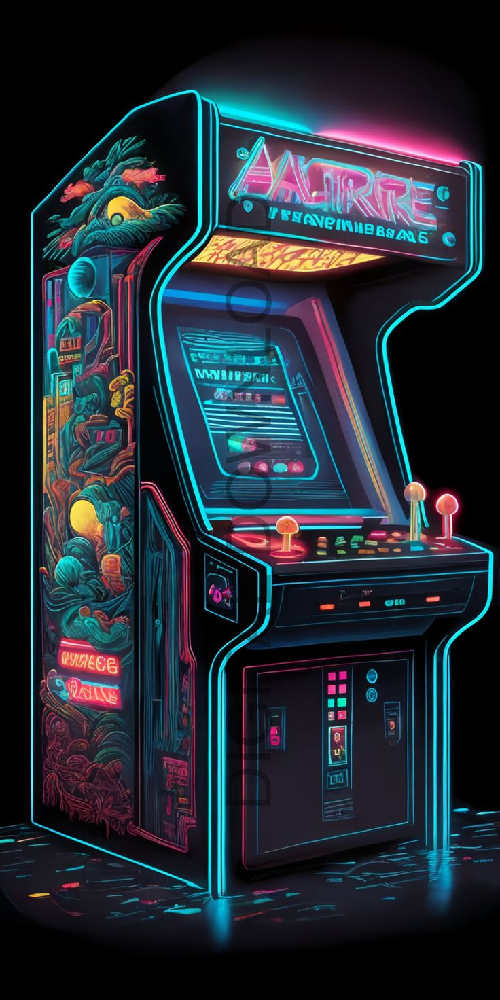

 Are you ready to step into a world where pixels collide, neon lights dance, and high scores are the ultimate currency? Look no further! At PixelPulse, we have crafted an electrifying gaming experience that transcends time and space. Whether you are a seasoned joystick jockey or a button-mashing newbie, our arcade is your playground. What Awaits You: Retro Vibes, Modern Thrills: Our walls echo with the nostalgic hum of classic arcade cabinets. From Pac-Man to Street Fighter, relive the golden age of gaming. But do not be fooled—our lineup also boasts cutting-edge VR simulations, rhythm games, and mind-bending puzzles. Cosmic Challenges: Embark on epic quests across galaxies, rescue princesses, and battle pixelated dragons. Our game library spans genres, eras, and dimensions. Choose your adventure, hero! High Score Hall of Fame: Climb the ranks, beat the top scores, and etch your name into arcade legend. Bragging rights? Oh, they are real. And the coveted “Quarter Master” title? Only the best claim it. PixelFuel Café: Refuel between rounds with pixel-perfect snacks. Sip on “8-Bit Brews,” munch on “Power Pellets” (they are just pretzels, but shh), and recharge your gaming mojo. Tournaments and Showdowns: Every Friday night, the arcade pulses with intensity. Join our weekly tournaments—Street Fighter, Dance Dance Revolution, or even Tetris. The crowd roars, and victory tastes like pixelated victory. VIP Retro Lounges: For those who crave exclusivity, our VIP lounges transport you to the 80s. Neon graffiti, bean bags, and vintage consoles await. It is like stepping into a Tron fever dream. Tokens in Hand? Lets Play!
For any enquiry feel free to ask.Do you need company contacts for link up? View our products
Yanzo Arcade: Where pixels collide, and legends are born.